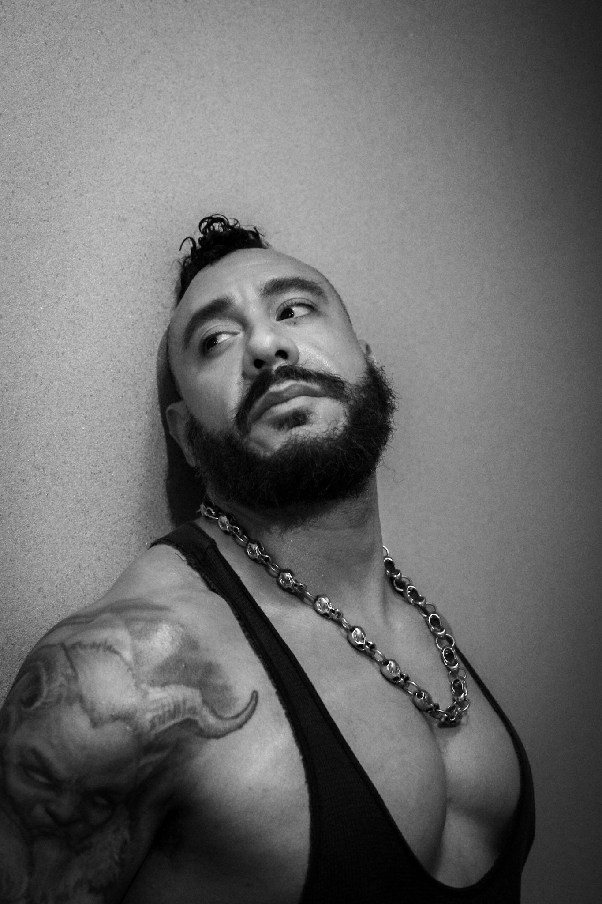
Artist · Designer · Educator
A versatile and multidisciplined professional with extensive experience in fine art, commercial practice, and creative education. Skilled in digital content pipelines for live events, streaming, and social media — committed to staying ahead of trends in metamedia production, emerging technologies, and experiential design, while championing the vital human elements that drive creative expression.
Adobe, Autodesk, Avid, Maxon, Foundry, Unreal Engine, Figma, Canva — full production suite across design, VFX, and motion.
Silicones, urethanes, FDM & SLA 3D printing, prosthetics, costume, prop design, and scenic construction.
macOS, Windows, Ubuntu, CentOS — pipeline engineering, JAMF deployment, and infrastructure management for animation and VFX.
Claude, Cursor, Midjourney, Stable Diffusion, Sora, Kimi — AI-native workflows across generative image, video, and language tools.
Motion graphics in After Effects, sound design support, stage production, makeup effects, and talent coordination for major live events.
WordPress, Shopify, UX/UI design, CRM integration, data analytics, and full web presence redesigns for clients and institutions.
Prosthetics, sculptural costume, silicone fabrication, and practical effects.
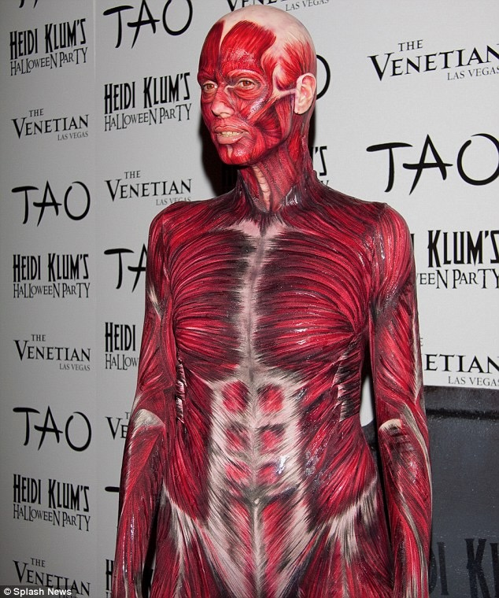
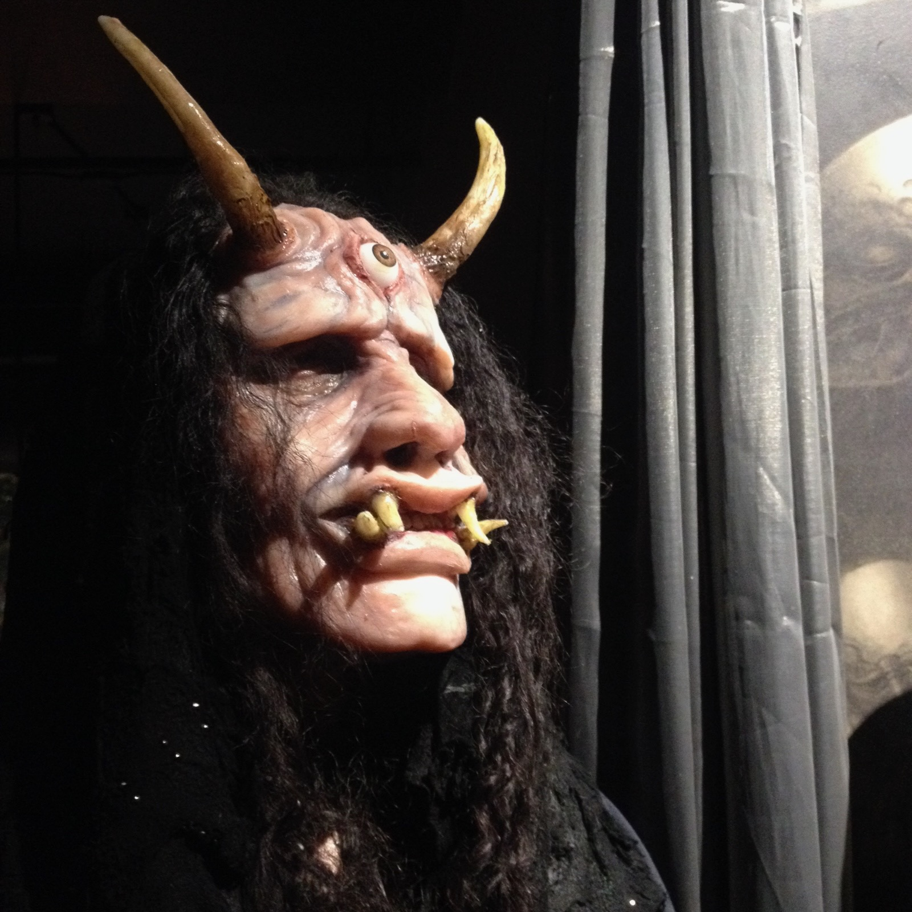
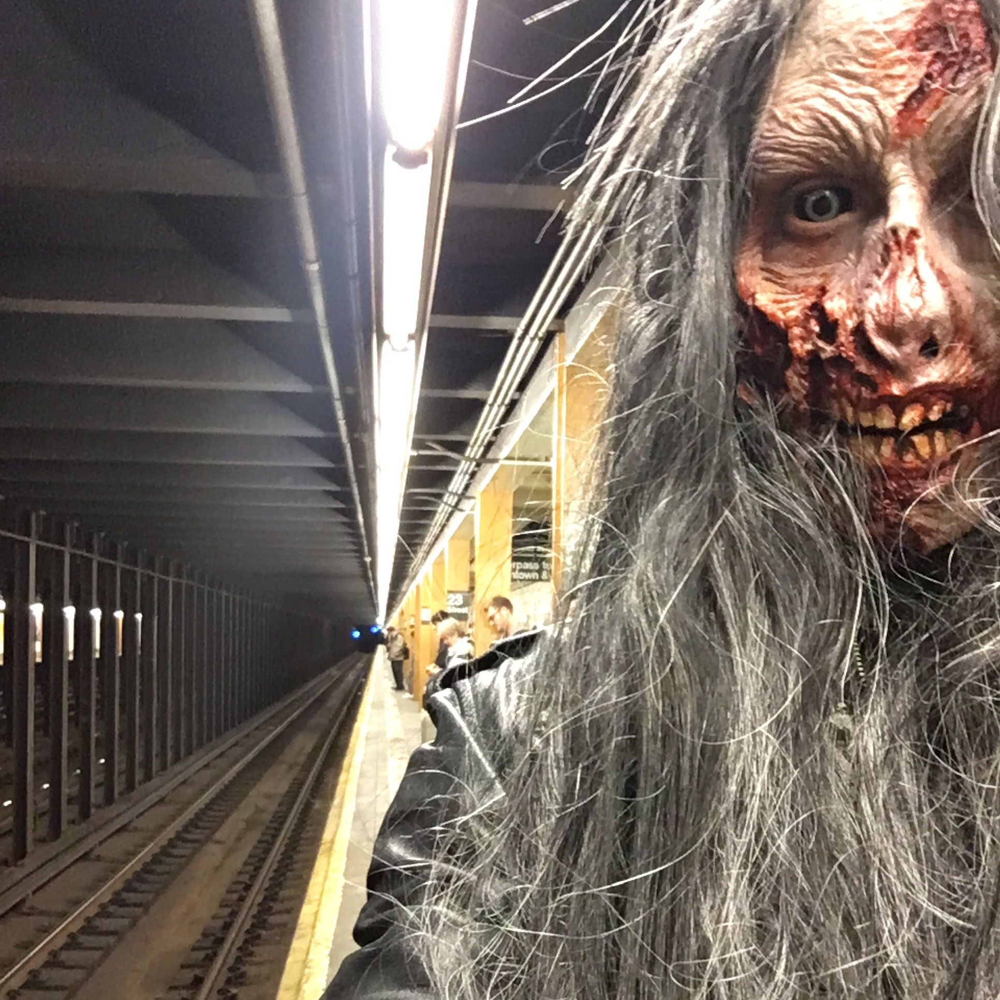
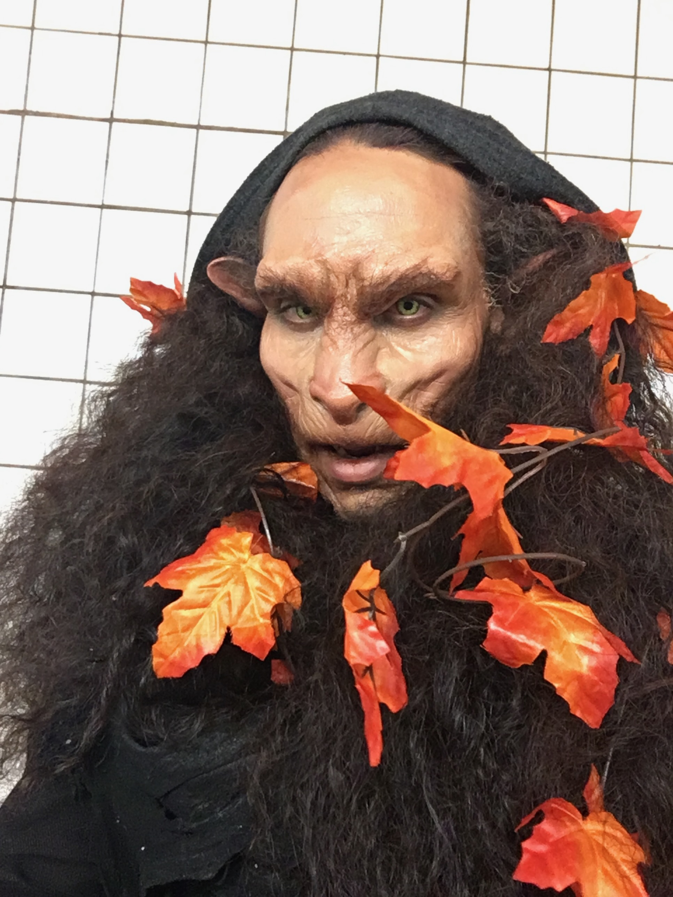
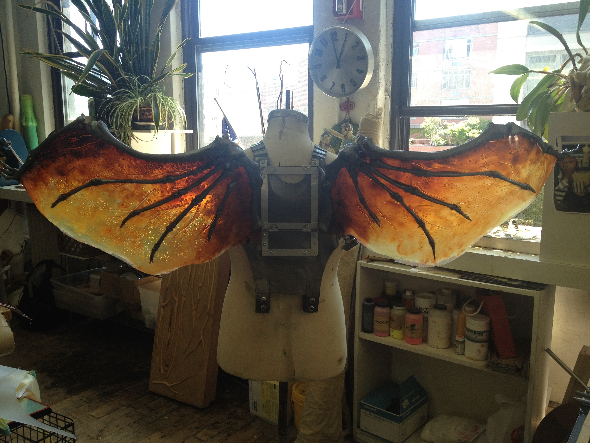
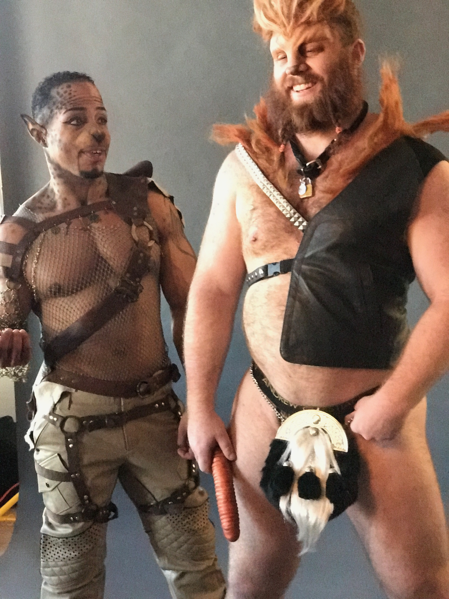
Employment spanning creative technology, fabrication, gallery production, and the web.
Asstricks Apparel LLC
Retouched and edited images for advertising, merchandising, and e-commerce. Managed studio operations, materials sourcing, and inventory via Shopify. Formulated, cast, and constructed silicone garments with hardware installation. Handled point-of-sale operations for retail and special events.
School of Visual Arts — BFA Computer Arts
Led R&D and support for animation and VFX pipelines on Apple systems. Shaped animation technology strategy, built and documented internal tools, maintained production infrastructure, deployed systems using JAMF, streamlined Mac render workflows, and delivered advanced support to students and faculty.
Last Rites Gallery
Gallery buildout and teardown. Facade construction, painting, and finishing. Prop and fixture construction and installation. Software procurement, deployment, and management throughout the gallery's exhibition cycle.
The New School
Website migration and total redesign for the Department of East Asian Studies. Public and internal sites migrated to WordPress, requiring major structural redesign. Content updated to current coding standards.
Freelance, community, and non-profit work rooted in LGBTQ+ advocacy, live performance, and public health.
508 Operations
Redesigned web presence with a streamlined client-facing UX. Integrated CRM and data analytics for improved e-commerce engagement, customer impressions, and retention.
Mint 400 Records · Tabitha Booth Music
Contributed harmonies and vocal stylings to Wolf Moon, a multi-disciplinary musical and spoken-word album. Performed special spoken-word recitation of poetry by the late Mary Oliver at live shows. Winner — Best Live Indie Album, Elephant Talk Music Awards, Atlantic City.
National LGBTQ Task Force · Free Radical Design Group
Full-body makeup on talent in high-temperature environments. Custom sprites and montage in After Effects for animated sequences on stage. Costume sales, set production assistance, sound design, and resource wrangling at major LGBTQ events.
The Saint at Large
Makeup design and look development. Full-body makeup and prosthetic application on talent. Talent wrangling between live music sets. Public health outreach including HIV prevention education for the Latine LGBTQ community.
Izquierdo Studio
Bespoke production of facial and body prosthetics for major talent. Stage costume and props for major concert tours, large-scale theatrical productions, and film and television. Talent fittings and prosthetic application.
Charitable & Fundraising Events
A decade of makeup effects, prop design, costume, and scenic design for charity events benefitting homeless LGBTQ youth and marginalized LGBTQ refugees and communities of color.
Live event production, scenic design, and atmospheric visual work.
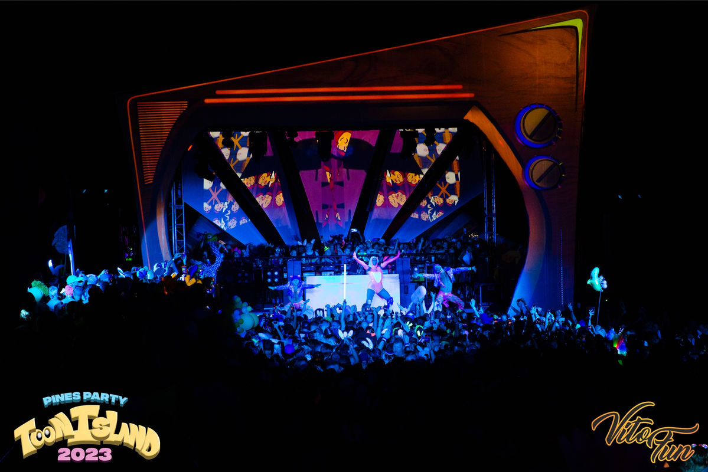
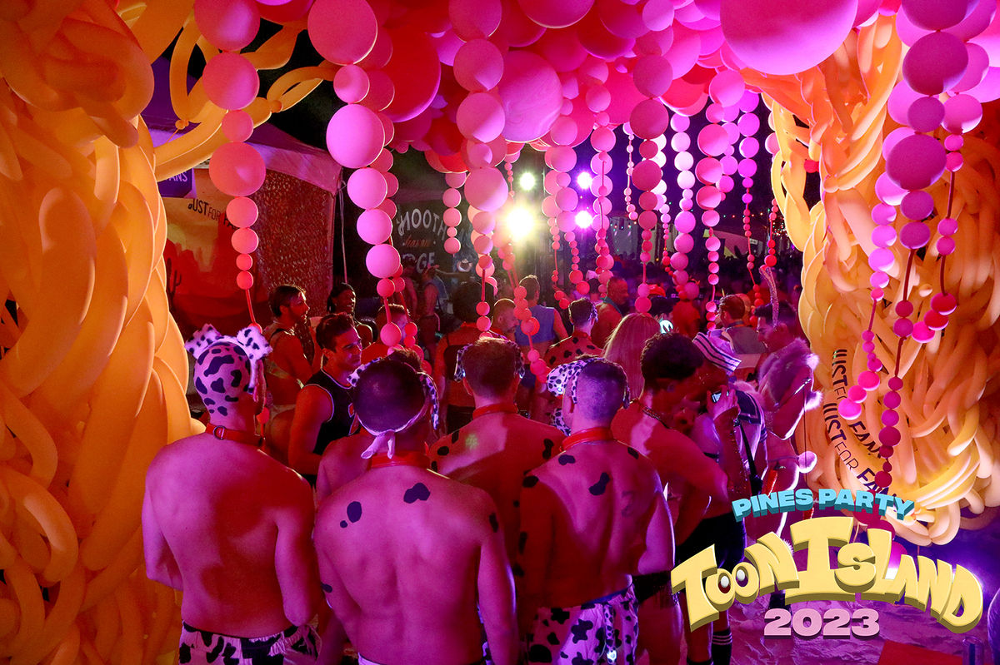
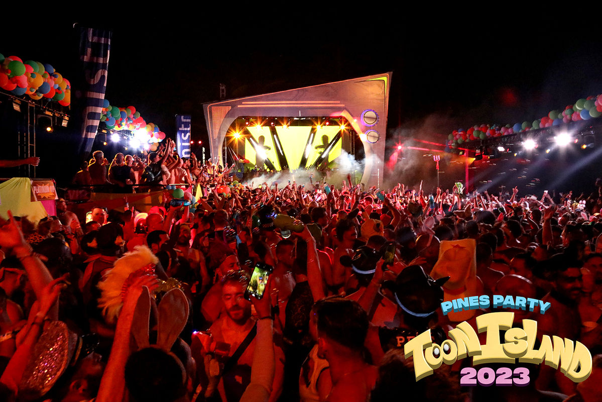
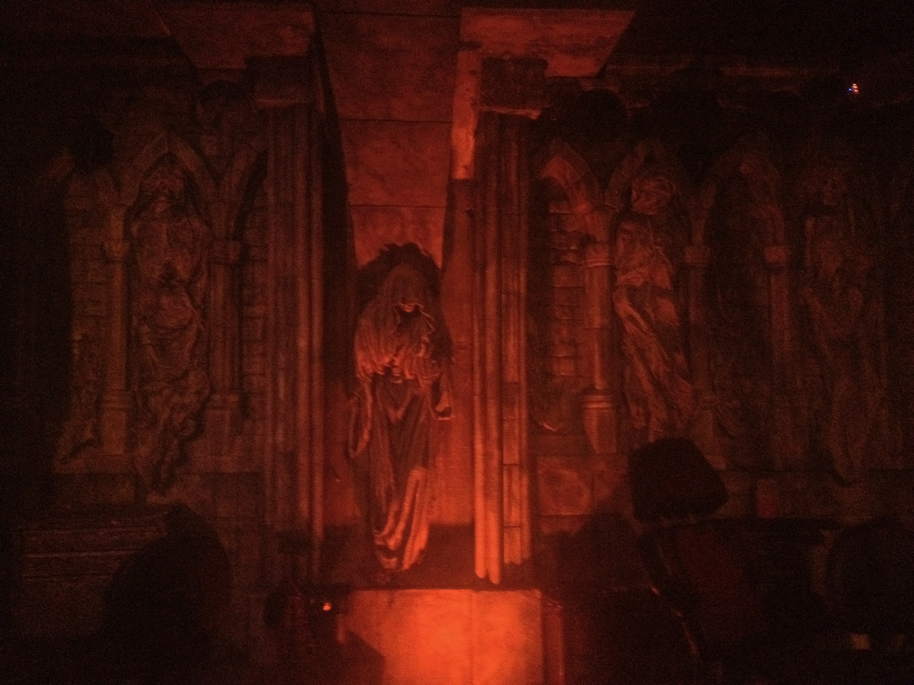
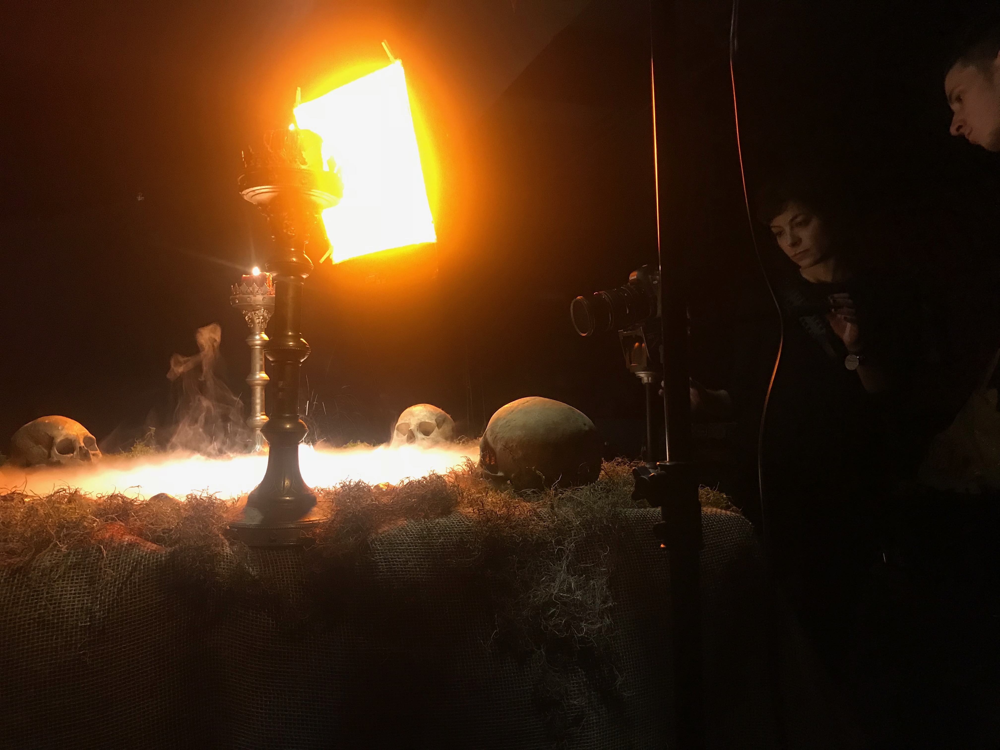
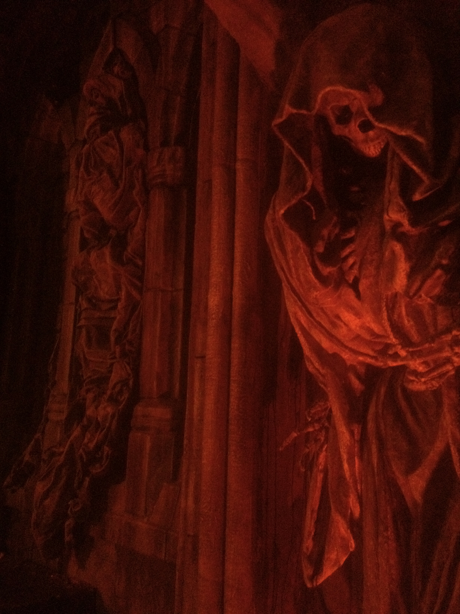
Let's make
something
together.